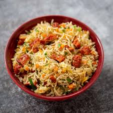

Chicken-friedrice

Description
This chicken fried rice will easily become one of your go-to dinners! It’s easy, it calls for basic ingredients, it’s hearty and filling and it’s perfectly flavorful.
Plus it’s quick to make and clean up is a breeze. It also makes perfectly delicious leftovers if you are lucky enough to have any left, or make it ahead for meal prep for the next couple of days.
Ingrediants
- Brown rice – leftover rice from the day before works best. White rice will work great here too.
- Chicken breasts – I like to dice the chicken into very small pieces about 1/2 – 3/4-inch, it makes it the perfect size for this fried rice.
- Toasted sesame oil – this oil is very strong and a little goes a long way. This ingredient adds lots of flavor to this dish.
- Vegetable oil (or canola oil) – this is used for sautéing (along with the sesame oil so you won’t use to much of that and sesame oil on it’s own has a low smoke point).
- Frozen peas and carrots blend – I like to use the frozen vegetable here to save time, but fresh will work too you’ll just have to longer so they’ll become tender enough.
- Green onions – feel free to add more green onions to taste.
- Garlic – only use fresh garlic here for best flavor.
- Eggs – you can add 3 eggs here to stretch the recipe a bit. If it’s easier for you, you can stir in a bowl with a fork first then add to the skillet.
- Low-sodium soy sauce – if you have regular sodium soy sauce that will work too, just start with 2 Tbsp and add more if needed.
Steps
- In a large non-stick wok or skillet, heat 1 1/2 tsp sesame oil and 1 1/2 tsp of the canola oil over medium-high heat.
- Add chicken pieces, season lightly with salt and pepper and saute until cooked through, about 5 – 6 minutes.
- Transfer chicken to a plate or a piece of foil and set aside.
- Showing how to make chicken fried rice. Sautéing small chicken breast pieces in a skillet until cooked through.
- Return skillet to medium-high heat, add remaining 1 1/2 tsp sesame oil and 1 1/2 tsp canola oil.
- Add peas and carrots blend and green onions and saute 1 minute, then add garlic and saute 1 minute longer.
- Sautéing peas and carrots in skillet for fried rice.
- Push veggies to edges of pan.
- Add eggs in center and cook and scramble until just set.
- Scrambling eggs in the center of a ring of vegetables in a skillet for chicken fried rice.
- Return chicken to skillet along with rice.
- Add in soy sauce and season with salt and pepper to taste.
- Pouring soy sauce over brown rice and chicken pieces in a large skillet to finish fried rice.
- Toss everything together and serve warm with Sriracha to taste if desired.
- Completed chinese chicken fried rice all tossed together in a large skillet.